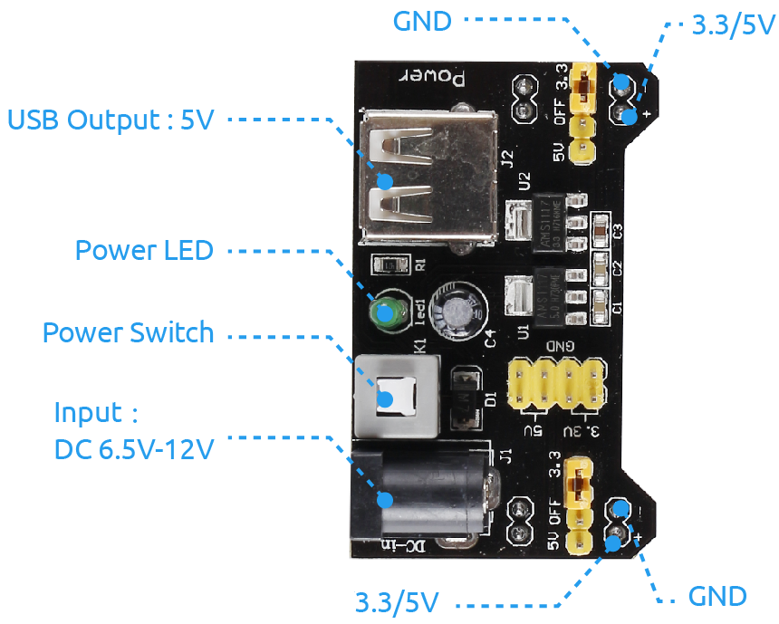

注釈
こんにちは、SunFounderのRaspberry Pi & Arduino & ESP32愛好家コミュニティへようこそ！Facebook上でRaspberry Pi、Arduino、ESP32についてもっと深く掘り下げ、他の愛好家と交流しましょう。
参加する理由は？
エキスパートサポート：コミュニティやチームの助けを借りて、販売後の問題や技術的な課題を解決します。
学び＆共有：ヒントやチュートリアルを交換してスキルを向上させましょう。
独占的なプレビュー：新製品の発表や先行プレビューに早期アクセスしましょう。
特別割引：最新製品の独占割引をお楽しみください。
祭りのプロモーションとギフト：ギフトや祝日のプロモーションに参加しましょう。
👉 私たちと一緒に探索し、創造する準備はできていますか？[ここ]をクリックして今すぐ参加しましょう！
1.3.1 モーター
前書き
このレッスンでは、L293Dを使用してDCモーターを駆動し、時計回りと反時計回りに回転させる方法を学習する。 安全上の理由で、DCモーターは大電流を必要とするため、ここでは電源モジュールを使用してモーターに電力を供給する。
部品

原理
L293D
L293Dは、高電圧と高電流のチップで統合された4チャネルモータードライバーである。 標準のDTL、TTLロジックレベルに接続し、誘導負荷（リレーコイル、DC、ステッピングモーターなど）およびパワースイッチングトランジスタなどを駆動するように設計される。 DCモーターは、DC電気エネルギーを機械エネルギーに変換するデバイスである。それらは、優れた速度調整性能の利点により、電気駆動装置で広く使用されている。
ピンの図については、以下の図を参照してください。L293Dには、電源用の2つのピン（Vcc1とVcc2）がある。Vcc2はモーターに電力を供給し、Vcc1はチップに電力を供給するために使用される。 ここでは小型のDCモーターが使用されているため、両方のピンを+ 5Vに接続してください。

以下はL293Dの内部構造である。ピンENはイネーブルピンであり、高レベルでのみ機能する。Aは入力を表し、Yは出力を表す。それらの間の関係は右下に見ることができる。 ピンENがHighレベルのとき、AがHighの場合、YはHighレベルを出力する。AがLowの場合、YはLowレベルを出力する。ピンENがLowレベルの場合、L293Dは機能しない。

DCモーター
これは5V DCモーターである。銅板の2つの端子に1つの高レベルと1つの低レベルを与えると回転する。便宜上、ピンを溶接することができる。

電源モジュール
この実験では、特に起動時と停止時にモーターを駆動するために大きな電流が必要である。 これは、Raspberry Piの通常の動作を大幅に妨害する可能性がある。そのため、このモジュールによってモーターに個別に電力を供給し、安全かつ着実に動作させる。
ブレッドボードに差し込むだけで電力を供給できる。3.3Vと5Vの電圧を提供し、付属のジャンパーキャップを介してどちらでも接続できる。
回路図
電源モジュールをブレッドボードに差し込み、ジャンパーキャップを5Vのピンに挿入すると、5Vの電圧が出力される。L293Dのピン1をGPIO22に接続し、それを高レベルに設定する。 ピン2をGPIO27に、ピン7をGPIO17に接続し、一方のピンをhighに、もう一方のピンをhighに設定する。したがって、モーターの回転方向を変更できる。

実験手順
ステップ1： 回路を作る。

注釈
電源モジュールはキットの9Vバッテリーバックルで9Vバッテリーを適用できる。電源モジュールのジャンパキャップをブレッドボードの5Vバスストリップに挿入する。
C言語ユーザー向け
ステップ2： コードのフォルダーに入る。
cd ~/davinci-kit-for-raspberry-pi/c/1.3.1/
ステップ3： コンパイルする。
gcc 1.3.1_Motor.c -lwiringPi
ステップ4： EXEファイルを実行する。
sudo ./a.out
コードが実行されると、モーターは最初に5秒間時計回りに回転し、それから5秒間停止し、その後5秒間反時計回りに回転してから5秒間停止する。この一連の動作は繰り返し実行される。
コード
#include <wiringPi.h>
#include <stdio.h>
#define MotorPin1 0
#define MotorPin2 2
#define MotorEnable 3
int main(void){
int i;
if(wiringPiSetup() == -1){ //when initialize wiring failed, print messageto screen
printf("setup wiringPi failed !");
return 1;
}
pinMode(MotorPin1, OUTPUT);
pinMode(MotorPin2, OUTPUT);
pinMode(MotorEnable, OUTPUT);
while(1){
printf("Clockwise\n");
delay(100);
digitalWrite(MotorEnable, HIGH);
digitalWrite(MotorPin1, HIGH);
digitalWrite(MotorPin2, LOW);
for(i=0;i<3;i++){
delay(1000);
}
printf("Stop\n");
delay(100);
digitalWrite(MotorEnable, LOW);
for(i=0;i<3;i++){
delay(1000);
}
printf("Anti-clockwise\n");
delay(100);
digitalWrite(MotorEnable, HIGH);
digitalWrite(MotorPin1, LOW);
digitalWrite(MotorPin2, HIGH);
for(i=0;i<3;i++){
delay(1000);
}
printf("Stop\n");
delay(100);
digitalWrite(MotorEnable, LOW);
for(i=0;i<3;i++){
delay(1000);
}
}
return 0;
}
コードの説明
digitalWrite(MotorEnable, HIGH);
L239Dを有効にする。
digitalWrite(MotorPin1, HIGH);
digitalWrite(MotorPin2, LOW);
2A（ピン7）に高レベルを設定する。1,2EN（ピン1）は高レベルなので、2Yは高レベルを出力する。
1Aに低レベルを設定すると、1Yが低レベルを出力し、モーターが回転する。
for(i=0;i<3;i++){
delay(1000);
}
このループは3 * 1000ms遅延する。
digitalWrite(MotorEnable, LOW)
1,2EN（ピン1）が低レベルの場合、L293Dは機能しない。モーターが回転を停止する。
digitalWrite(MotorPin1, LOW)
digitalWrite(MotorPin2, HIGH)
モーターの電流を逆にすると、モーターが逆回転する。
Python言語ユーザー向け
ステップ2： コードのフォルダーに入る。
cd ~/davinci-kit-for-raspberry-pi/python
ステップ3： 実行する。
sudo python3 1.3.1_Motor.py
コードが実行されると、モーターは最初に5秒間時計回りに回転し、それから5秒間停止し、その後5秒間反時計回りに回転してから5秒間停止する。この一連の動作は繰り返し実行される。
コード
注釈
以下のコードを 変更/リセット/コピー/実行/停止 できます。 ただし、その前に、 davinci-kit-for-raspberry-pi/python のようなソースコードパスに移動する必要があります。
import RPi.GPIO as GPIO
import time
dhtPin = 17
GPIO.setmode(GPIO.BCM)
MAX_UNCHANGE_COUNT = 100
STATE_INIT_PULL_DOWN = 1
STATE_INIT_PULL_UP = 2
STATE_DATA_FIRST_PULL_DOWN = 3
STATE_DATA_PULL_UP = 4
STATE_DATA_PULL_DOWN = 5
def readDht11():
GPIO.setup(dhtPin, GPIO.OUT)
GPIO.output(dhtPin, GPIO.HIGH)
time.sleep(0.05)
GPIO.output(dhtPin, GPIO.LOW)
time.sleep(0.02)
GPIO.setup(dhtPin, GPIO.IN, GPIO.PUD_UP)
unchanged_count = 0
last = -1
data = []
while True:
current = GPIO.input(dhtPin)
data.append(current)
if last != current:
unchanged_count = 0
last = current
else:
unchanged_count += 1
if unchanged_count > MAX_UNCHANGE_COUNT:
break
state = STATE_INIT_PULL_DOWN
lengths = []
current_length = 0
for current in data:
current_length += 1
if state == STATE_INIT_PULL_DOWN:
if current == GPIO.LOW:
state = STATE_INIT_PULL_UP
else:
continue
if state == STATE_INIT_PULL_UP:
if current == GPIO.HIGH:
state = STATE_DATA_FIRST_PULL_DOWN
else:
continue
if state == STATE_DATA_FIRST_PULL_DOWN:
if current == GPIO.LOW:
state = STATE_DATA_PULL_UP
else:
continue
if state == STATE_DATA_PULL_UP:
if current == GPIO.HIGH:
current_length = 0
state = STATE_DATA_PULL_DOWN
else:
continue
if state == STATE_DATA_PULL_DOWN:
if current == GPIO.LOW:
lengths.append(current_length)
state = STATE_DATA_PULL_UP
else:
continue
if len(lengths) != 40:
#print ("Data not good, skip")
return False
shortest_pull_up = min(lengths)
longest_pull_up = max(lengths)
halfway = (longest_pull_up + shortest_pull_up) / 2
bits = []
the_bytes = []
byte = 0
for length in lengths:
bit = 0
if length > halfway:
bit = 1
bits.append(bit)
#print ("bits: %s, length: %d" % (bits, len(bits)))
for i in range(0, len(bits)):
byte = byte << 1
if (bits[i]):
byte = byte | 1
else:
byte = byte | 0
if ((i + 1) % 8 == 0):
the_bytes.append(byte)
byte = 0
#print (the_bytes)
checksum = (the_bytes[0] + the_bytes[1] + the_bytes[2] + the_bytes[3]) & 0xFF
if the_bytes[4] != checksum:
#print ("Data not good, skip")
return False
return the_bytes[0], the_bytes[2]
def main():
while True:
result = readDht11()
if result:
humidity, temperature = result
print ("humidity: %s %%, Temperature: %s C`" % (humidity, temperature))
time.sleep(1)
def destroy():
GPIO.cleanup()
if __name__ == '__main__':
try:
main()
except KeyboardInterrupt:
destroy()
コードの説明
def motor(direction):
# Clockwise
if direction == 1:
# Set direction
GPIO.output(MotorPin1, GPIO.HIGH)
GPIO.output(MotorPin2, GPIO.LOW)
# Enable the motor
GPIO.output(MotorEnable, GPIO.HIGH)
print ("Clockwise")
...
変数が direction である関数 motor() を作成する。
direction = 1 の条件が満たされると、モーターは時計回りに回転する。
direction = -1 の場合、モーターは反時計回りに回転する。
そして、 direction = 0 の条件下では、回転を停止する。
def main():
# Define a dictionary to make the script more readable
# CW as clockwise, CCW as counterclockwise, STOP as stop
directions = {'CW': 1, 'CCW': -1, 'STOP': 0}
while True:
# Clockwise
motor(directions['CW'])
time.sleep(5)
# Stop
motor(directions['STOP'])
time.sleep(5)
# Anticlockwise
motor(directions['CCW'])
time.sleep(5)
# Stop
motor(directions['STOP'])
time.sleep(5)
main() 関数で、CWが1、CCWの値が-1、0がStopを指す配列 directions[] を作成する。
コードが実行されると、モーターは最初に5秒間時計回りに回転し、それから5秒間停止し、その後5秒間反時計回りに回転してから5秒間停止する。この一連の動作は繰り返し実行される。
これで、モーターブレードが回転していることが分かる。
現象画像